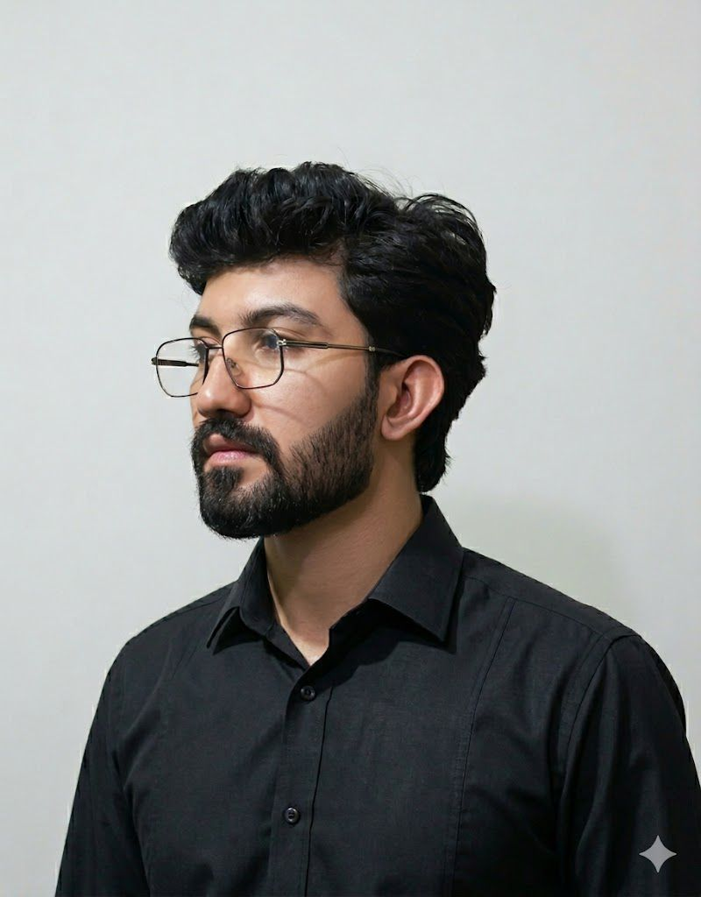

The cost of making it work.
Generating video required serious computing power. I began to see that a technically working system wasn’t necessarily a sustainable product. Every architectural decision had a cost, and those costs mattered.
Ammar Ali / AI & Backend Engineer
I design and build AI and backend systems with the whole picture in mind: how they work, what they cost, and how people experience them.
It started with curiosity
My journey into technology began with video games and a simple question: how does this work?
That curiosity led me to programming, automating small tasks, experimenting with Python, and eventually exploring artificial intelligence.
Somewhere along the way, experimenting became building things people could actually use.
A lesson in building products
NOVA was the first product we built at BeeNeural: an AI-powered video generation platform. We were excited by what we could build. Then reality started asking different questions.
Generating video required serious computing power. I began to see that a technically working system wasn’t necessarily a sustainable product. Every architectural decision had a cost, and those costs mattered.
I had tried to put almost every feature I could imagine into NOVA. Instead of making it better, the added capabilities made the interface and its flow harder to understand. I was seeing the product through the eyes of its builder.
“A better engineering decision starts with understanding whether it’s the right solution.”
From building to ownership
Co-founding BeeNeural and taking responsibility for its technology changed how I approach engineering.
As a hands-on CTO, I designed architectures, implemented systems, worked through technical challenges, and helped make decisions that affected the product as a whole.
Now, before choosing a framework or designing an architecture, I want to understand the problem: who will use it, what happens when it fails, what it costs to operate, and whether another engineer can maintain it.
Good engineering balances technical quality, user experience, and business reality.
Putting perspective into practice
Different problems, connected by the same goal: making technology useful in the real world.
An AI communication platform designed to follow through. I worked on the architecture and backend workflows connecting conversational AI to bookings, follow-ups, and human escalation.
Explore the case studyA computer vision platform connecting camera streams, facial analysis, event tracking, and operator review. My focus was the backend that brings those capabilities into a usable application.
Explore the case studyI developed Python services that process competition events, coordinate audio analysis, retrieve subscriber information, and submit personalized SMS messages.
Explore the case studyCollaboration
One thing I’ve learned from building products and leading engineering teams is that the best solutions rarely come from one person knowing everything.
Over the years, I’ve worked alongside talented engineers, AI specialists, UI/UX designers, and developers across different disciplines. We’ve solved problems together, built software, and learned from each other’s expertise.
Today, I work independently, but those relationships remain. When a project calls for additional expertise, I can collaborate with professionals I’ve worked with before.
I bring my experience in system architecture, backend engineering, and technical leadership to connect the different pieces and keep the work moving toward a shared goal.
Over the years, I’ve worked alongside engineers, designers, and developers whose expertise complements my own. Different specialties, shared experience, and the ability to collaborate again when a project calls for it.

Ammar AliArchitecture · Backend · Technical CoordinationIndependent by choice. Collaborative by experience.
The engineering behind the work
Build systems that are practical, understandable, and dependable.
LLM agents, tool calling, RAG, computer vision, and intelligent automation.
Python, FastAPI, PostgreSQL, Redis, distributed workflows, APIs, and integrations.
Docker, Azure, cloud deployments, workflow orchestration, and production operations.
The next chapter
I’m working independently and exploring opportunities in AI engineering and complex backend systems. Whether you’re building a product or growing a team, I’d love to hear what you’re working on.
ammaralee.dev@gmail.com